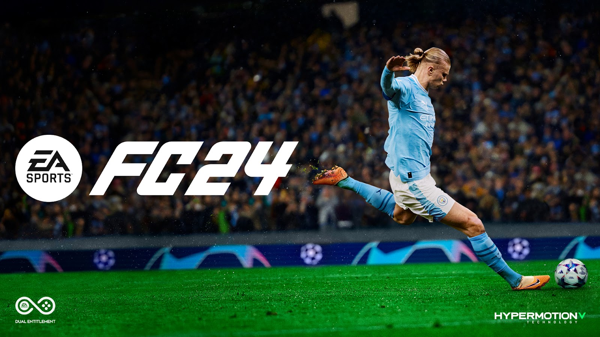
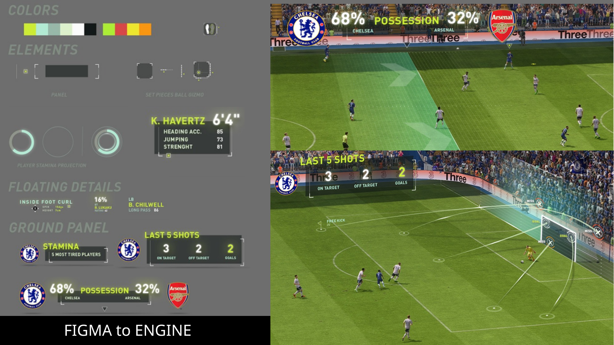
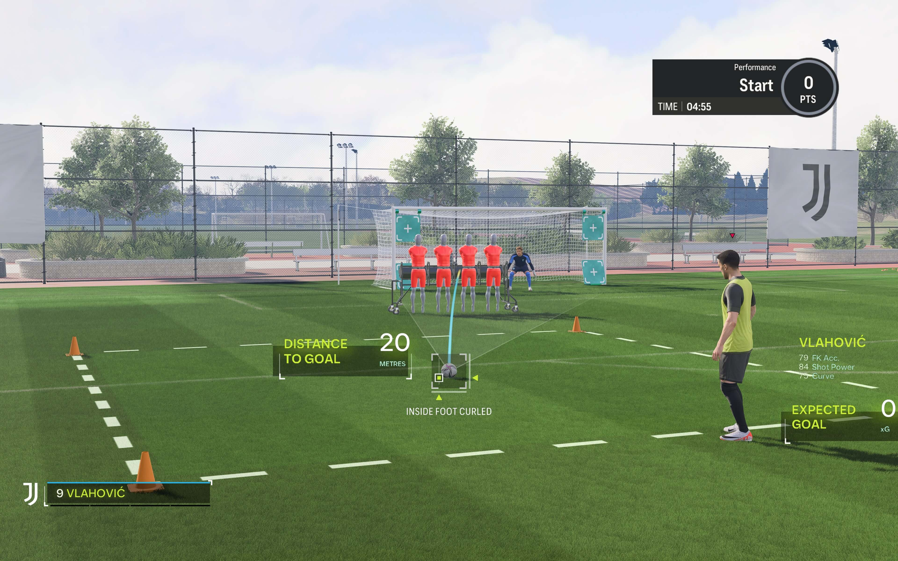
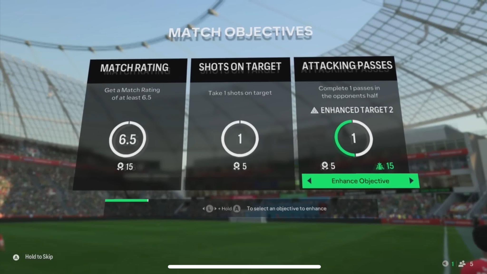
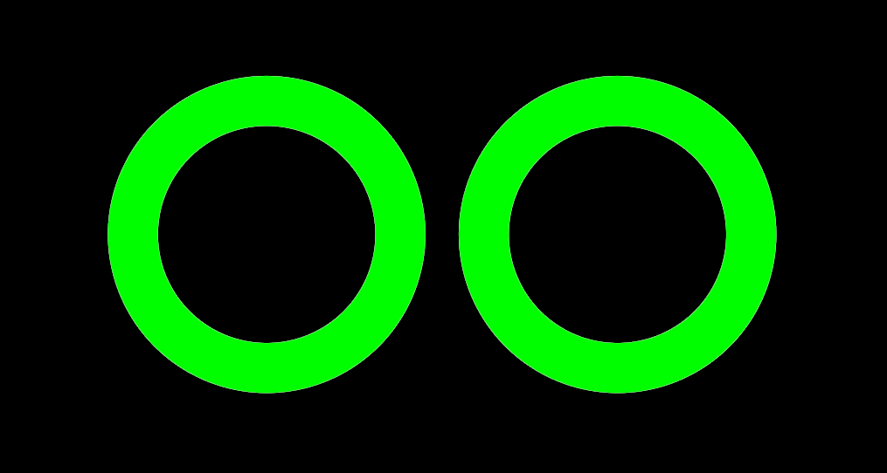
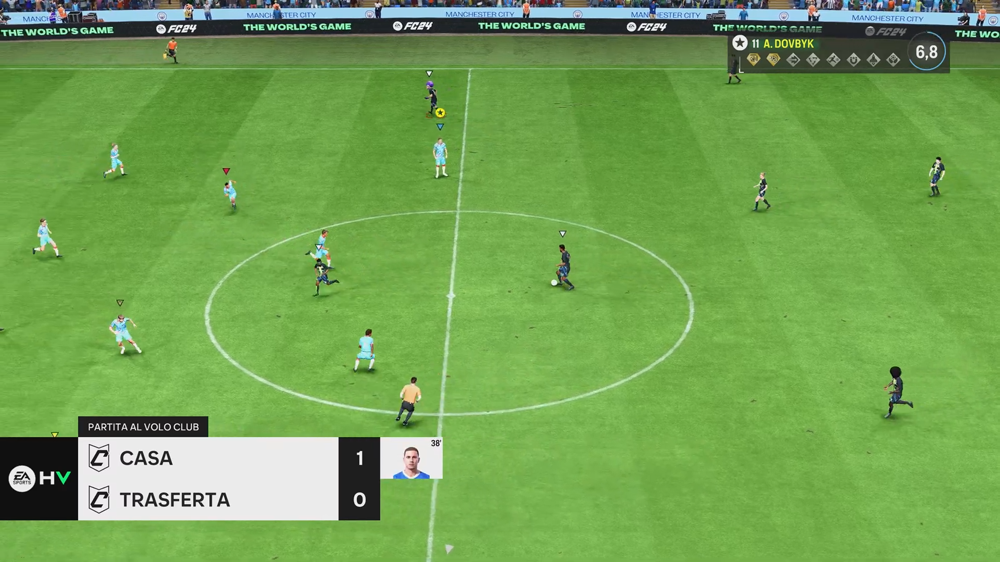
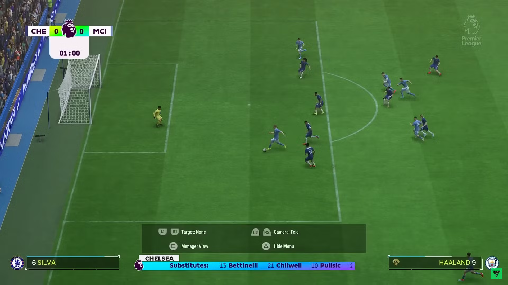

EA Sports FC 24
EA Sports · Frostbite · 2023

EA Sports FC 24, the inaugural EA Sports FC title, first entry after the FIFA branding era.






Technical deep-dive. The AR overlays above (shot maps, possession, stamina, ring indicators) are all instances of one reusable widget family. Read how it was built and how it cut new-AR authoring from days to hours: Intelligent AR: Reusable Widget System →